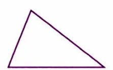
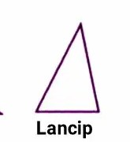
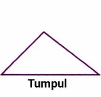
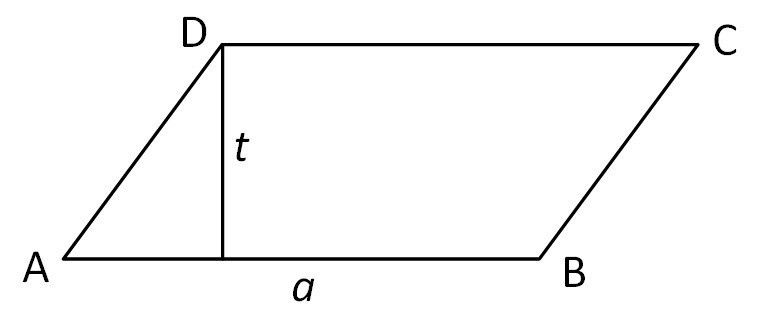
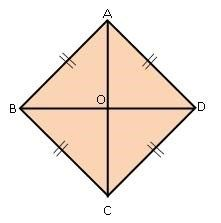
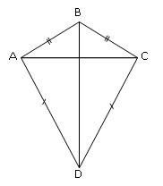

Sebelum Memulai, Simak Video Berikut
1. Segitiga
Definisi: Segitiga adalah bangun datar dengan tiga sisi dan tiga sudut.
Rumus:
- Luas = ½ × alas × tinggi
- Keliling = sisi1 + sisi2 + sisi3
Sifat-Sifat:
- Memiliki 3 sisi dan 3 sudut.
- Jumlah ketiga sudut selalu 180°.
Segitiga Lancip
Definisi: Segitiga dengan semua sudutnya kurang dari 90°.
Sifat-sifat:
- Semua sudut < 90°
- Bisa berbentuk sama sisi, sama kaki, atau sembarang
Segitiga Siku-siku
Definisi: Segitiga dengan satu sudut tepat 90°.
Sifat-sifat:
- Memiliki satu sudut siku-siku (90°)
- Sisi terpanjang disebut hipotenusa
- Memenuhi Teorema Pythagoras
Rumus:
- Luas = ½ × alas × tinggi
- Keliling = alas + tinggi + hipotenusa
Segitiga Tumpul
Definisi: Segitiga dengan satu sudut lebih dari 90°.
Sifat-sifat:
- Memiliki satu sudut tumpul (>90°)
- Dua sudut lainnya lancip (<90°)
- Sisi terpanjang adalah sisi berhadapan dengan sudut tumpul
Jajar Genjang
Definisi: Jajar genjang adalah bangun datar dengan dua pasang sisi yang sejajar dan panjangnya sama.
Rumus:
- Luas = alas × tinggi
- Keliling = 2 × (alas + sisi miring)
Sifat-Sifat:
- Memiliki dua pasang sisi sejajar yang sama panjang.
- Sisi-sisinya berlawanan tetapi sejajar.
- Sudut yang berdekatan membentuk sudut pelengkap (jumlahnya 180°).
Belah Ketupat
Definisi: Belah ketupat adalah bangun datar dengan empat sisi yang sama panjang dan kedua diagonal saling membentuk sudut siku-siku.
Rumus:
- Luas = ½ × diagonal1 × diagonal2
- Keliling = 4 × sisi
Sifat-Sifat:
- Keempat sisi memiliki panjang yang sama.
- Diagonal saling tegak lurus.
- Diagonal membagi belah ketupat menjadi dua segitiga sama besar.
Layang-Layang
Definisi: Layang-layang adalah bangun datar yang memiliki dua pasang sisi yang sama panjang dan berdekatan, serta memiliki diagonal yang saling tegak lurus.
Rumus:
- Luas = ½ × diagonal1 × diagonal2
- Keliling = 2 × (sisi1 + sisi2)
Sifat-Sifat:
- Memiliki dua pasang sisi yang berhadapan dan sama panjang.
- Diagonal pertama membagi dua sudut yang saling berhadapan, dan diagonal kedua membagi dua sisi yang saling berhadapan.
- Diagonal saling tegak lurus dan membagi layang-layang menjadi empat segitiga sama besar.
Lingkaran

Definisi: Lingkaran adalah bangun datar yang terbentuk dari kumpulan titik yang memiliki jarak yang sama (radius) terhadap titik pusat.
Rumus:
- Luas = π × r²
- Keliling = 2 × π × r
Sifat-Sifat:
- Semua titik pada lingkaran memiliki jarak yang sama dari titik pusat.
- Lingkaran tidak memiliki sudut atau sisi lurus.
- Diameter adalah dua kali panjang jari-jari (r).